Only 10 km from the bustle of the city, Nairobi national park, covering an area of close to 100 sq km is an ecosystem of grassland, forests and rivers. It is home to all the Big Five except Elephants which had to re-locate to larger reserves with enough food for them. Plains game found here include Giraffe, Gazelle, Zebra, Impala and the Heartbeest. It is also possible to observe Cheetah, Jackal, Hyena and Serval cats while birds such as the Masai Ostrich, Hadada Ibis, Sacred Ibis, Kingfishers and lilac breasted Rollers among many other species, are resident here. The rivers are home to crocodiles and turtles are a usual citing.
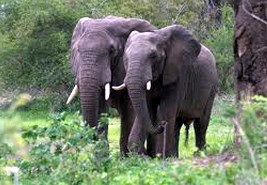
ABERDARES NATIONAL PARK,
With 766 square kilomtre, the park is a mixture of forest and moorland, with many cascading waterfalls, thick bamboo forest and sub-alpine plants. The major part lies at an altitude of 3,500 metres.
Deep ravines slice forested inclines, through which flow hidden streams which icy waterfalls tumble down rock faces. Above the thick forest area are reaches of alpine type moorlands usually hidden in mists. The park is a fairyland, awesome in its in its majesty and beauty, being rich in wildlife-elephant, rhino, the pig family, antelope, lion, leopard and buffalo, with monkeys of all types including the spectacular black and white Columbus. Birdlife is abundant and varied, the most conspicuous groups being the sunbirds, while game birds abound in plenty, as do birds of prey.
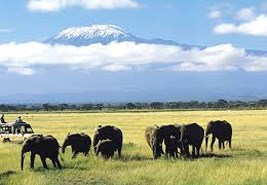
AMBOSELI NATIONAL PARK,
With 392 square kilometers, it is justly famous for both its big game scenic beauty. It consists of five basic wildlife habitats covering open plains areas of yellow barbed acacia woodland, rocky, lava stream, thorn bush country swamps and marshes and some mountains massifs. Majestically dominating the area, rising above a saucer of clouds, is the snow capped mountain of Kilimanjaro (5895 metres), the highest in Africa. Here the pastoral and proud Masaai people herding their cattle have lived in harmony with the wildlife since days of yore. This was the locale beloved of Earnest Hemmingway and Robert Ruark, where the sparkling white snows of Kilimanjaro have been a picturesque backdrop to one of Kenya’s most spectacular displays of wildlife – lion, elephant, leopard, cheetah, buffalo and hosts of plain game-making a perfect photographer’s paradise. Swamps and springs fed by underground rivers from the melting snows of the mountain, provide permanent watering places for the game while a dried up lake bed nearby produces a shimmering image in the heat.
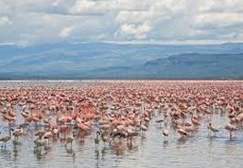
LAKE NAKURU NATIONAL PARK,
With 576 square kilometers, the lake is probably internationally famous for its vast concentrations of greater and lesser flamingos, its population being in excess of a million. Their delicate pink plumage decorates certain sections of its shores to form ‘the most fabulous bird spectacle in the world’. Now with the translocation of Rothschild giraffe and rhino it is beginning to develop a new reputation although some lion, leopard and quite a few buffalo are found therein there are no elephant, however. Lesser game are in residence as are a herd of hippo which live in the north-east comer.
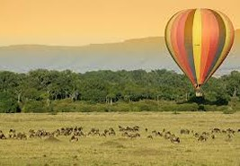
MAASAI MARA GAME RESERVE,
With 1520 square kilometers of pristine Africa wilderness, the reserve is world famous for its vast assemblage of plains’ game together with their assorted predators. It is perhaps the only area remaining in Kenya where one may see wildlife in the same super abundance as existed years ago, or for that matter, to witness one of the wonders of the world-the annual migration of million of wildebeest and zebra. It provides breath-taking vistas, a panorama of vast rolling plains and hills of groves of acacia woodlands and thickets of scrub. Also present are the largest population of lions to be found in Kenya, as well as huge herds of Topi and the rare Roan antelope not seen elsewhere int his country. The area is bisected by the Mara River which every now and then comes into tumultuous flood, and which is boarded by a section of luxurious riverine forest. Hippo laze in its waters, while drowsy looking crocodiles sunbathe on the banks, mouths agape. Despite the marvels of the annual migration, the Mara is rich in resident wildlife and avifauna. The bird life being profuse with over 400 species readily identified.
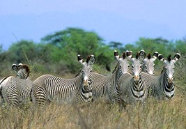
MERU NATIONAL PARK,
With 870 square kilometer, it is one of the most scenically diverse of Kenya’s wildlife sanctuaries where the park has a unique variety of habitats for such a comparatively small area. On the Tana itself, colonies of Monkey and flocks of parakeets inhabit the dense riverine forest. Hippo and crocodile are common, often seen sunning themselves on the broad beach-like sandpits. On clear mornings, the snow capped mass of Mt. Kenya appears in south-west, but the most picturesque sight is the sunset over the Nyambene range.
Open grasslands lie around the north-eastern boundary while fifteen perennial rivers feed the area, all rising from Mt. Kenya and flowing to the Tana River, keeping several swamps and springs alive and green throughout the year.
Of course the reserve is world famous as the home of Elsa-the lioness that was returned to the wilds-the star in a trilling story told in Joy Adamson’s book. The park is alive with a plethora of avifauna while some species of the birds are especially prolific. The reserve has magnificent stands of dom and raphia pals, with combretum bush in the north and comiphora in the south.
MT. KENYA NATIONAL PARK,
With 117 square kilometers, in areas above the 3,500 metres contour, this mountain symbol of Kenya-Batian of 5199 metres-rises dramatically to dominate the surrounding countryside.
Here there are sections of high forest-bamboo, alpine moorlands, glaciers, tams and glacial moraines. Often seen are enormous weirdly shaped bushes covered with moss and liche, open moorland with tussock grass studded with many species of giant lobelia and groundsel which often reach to a height of 3-5 metres. The ground has a rich profusion of everlasting helichrysums, alchemillas, and is interspersed with gladioli, delphiniums and ’red-hot pokers.
The peaks are remnants of a central core of an ancient volcanic crater, the rim of which has long since erode away to form a complicated system of rock faces and ridges which offer a great variety of climbing routes, calling for high mountaineering skill and experience by those familiar with rock, ice and snow technique. The thick verdant forests below the moorlands contain an abundance of game animals which include elephant, rhino, buffalo, leopard, bongo, bushbuck, duiker, giant forest hog, and several species of monkey. Lions inhabit the moorlands, although not common, while leopard and wild dog are seen in the lower zone.
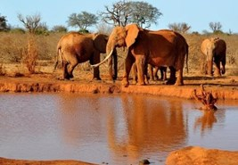
TSAVO NATIONAL PARKS :
With 20,700 square kilometers, this park, divided by the Mombasa-Nairobi highway into two blocks - East and West, is one of the world’s largest wildlife sanctuaries. While considerable portions of the park have been opened and developed for tourism, a great tract to the north is still inaccessible and closed to ordinary tourist traffic.
Tsavo is an interesting mixture of extensive plains, steep rocky hills rising abruptly, a few river valleys with their fringes of tall green acacia and palm trees. Altitudes range from 300 meters in the Eastern section to 1,800 meters in the highest peaks of the Ngulia Hills.
The Mzima springs is an interesting feature in Tsavo west. It’s crystal clear fresh waters are a sanctuary to crocodiles, hippo and fish. There is an underground glass observatory where visitors get upclose to the hippos with out the dangers of an encounter. It is fed by numerous rivers, some underground, which flow out of the lava from different directions, forming an oasis in the middle of this otherwise dry scrubby landscape.
Practically most of Kenya’s wildlife is represented in the two blocks of Tsavo, but the dominant one is elephant. Over 20,000 of these giants roam the area, which also happens to be a black rhino stronghold. The park is famous for its lions, descendants of the dreaded Man eaters during the construction of the Mombasa-Kampala railway at the end of the last century.
There is network of over 800kms of game viewing roads. Bird life is legion in the park and new species are often discovered. Sunbirds, hornbills, parrot, weavers, starlings, bustards and birds of prey are present in great numbers among the many species.
Akagera National Park, Ruhengeri, Gorilla Trekking
Enjoy spectacular views of wildlife at Akagera National Park as you also enjoy a canoe ride in this land of a thousand hills. After which get a chance to undertake a Gorilla Trekking expedition deep into the woods.
The Rwanda Gorillas as part of the Last Primates to walk on this planet
are one of the great spectacle to view while on safari in Rwanda
Get close to these amazing creatures as you comb them through Volcanoes National Park
Experience the best of Great Rift Valley and an abundance of Great wildlife spectacles with a chance to view and track the BIG FIVE.
Also witness some of the best hidden gems Kenya has to offer as you traverse the Lakes Baringo and Bogoria
A lodge Safari the best way to visit Kenya Parks. Get up close and intimate with the local cultures spanning the great wildlife spots and have an opportunity to learn some of the mediaval ways of these local communities that have stood the test of time.
Add some oomph to your safari adventure by engaging in a camping safari. Get close to nature, feel the thrill of the wild animals as they come close to your tent and enjoy watching night skies drift away in this safari jungle known as Africa.
Kampala, Ruwenzori, Mubuku River, Bujuku, Kitandara,
Mount Ruwenzori climbing in Uganda forms a good basis for someone looking for a little bit of adventure while on safari in Uganda. Lets take the climb today.
We believe an unforgettable travel experience doesn’t have to be expensive; that’s why we continually strive to offer the most competitive prices around. Because our grassroots approach provides a more affordable way to travel, we’re able to deliver the adventure of a lifetime at a fraction of the cost.
Membership
Africa Last Minute Limited
Kenya - Mombasa
Marketing Consultant UK & Europe
David T. Gimbe
43 Birchmore Road, Gloucester
GL14 DE United Kingdom

 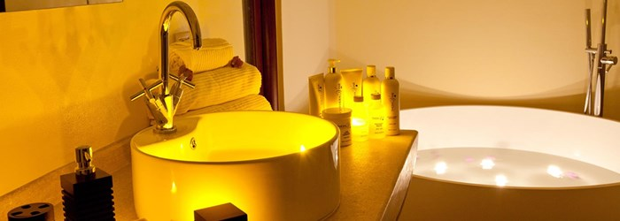
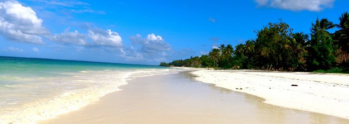
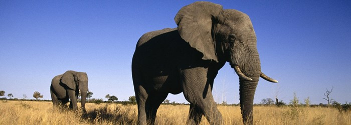
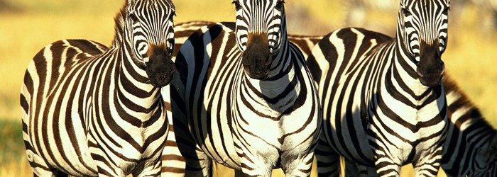
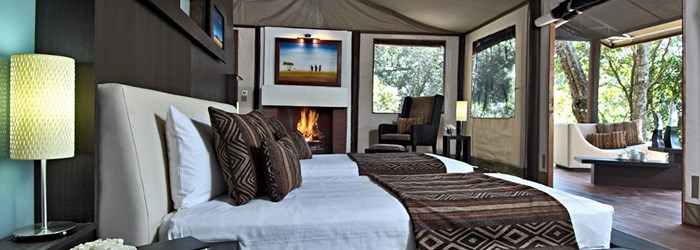
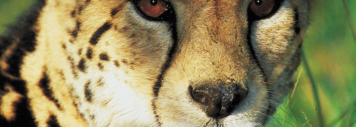
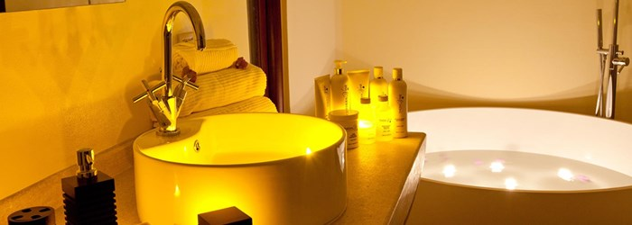
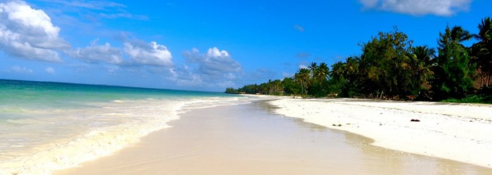
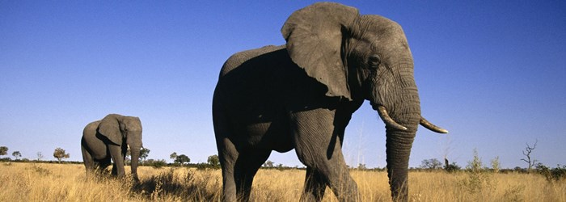
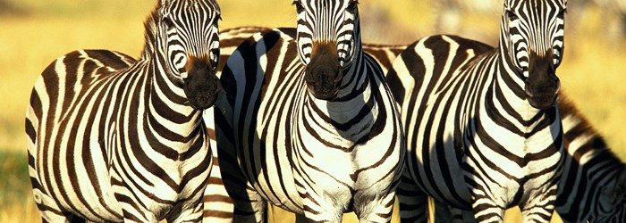
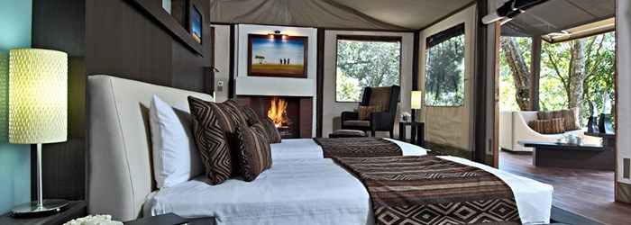
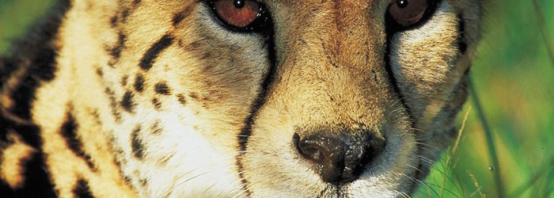